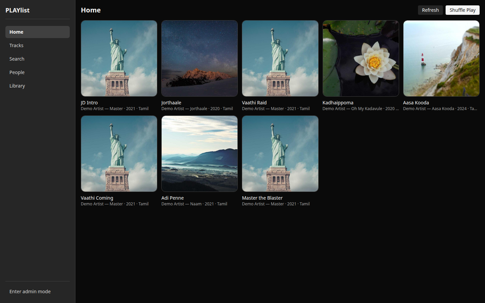
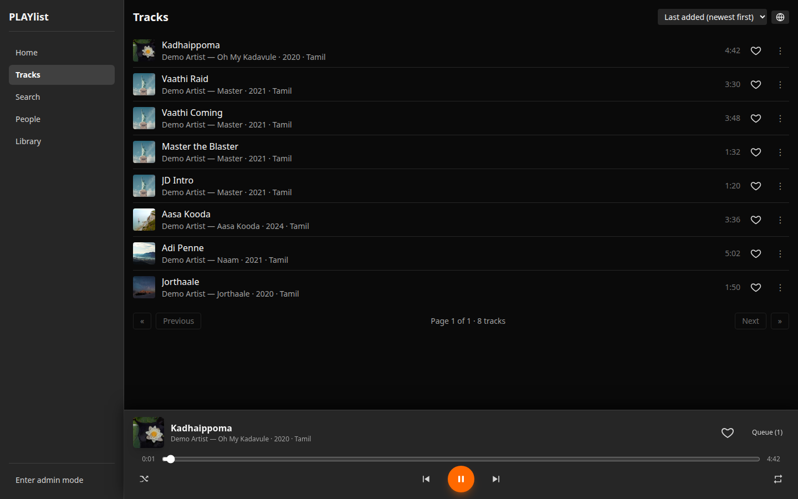
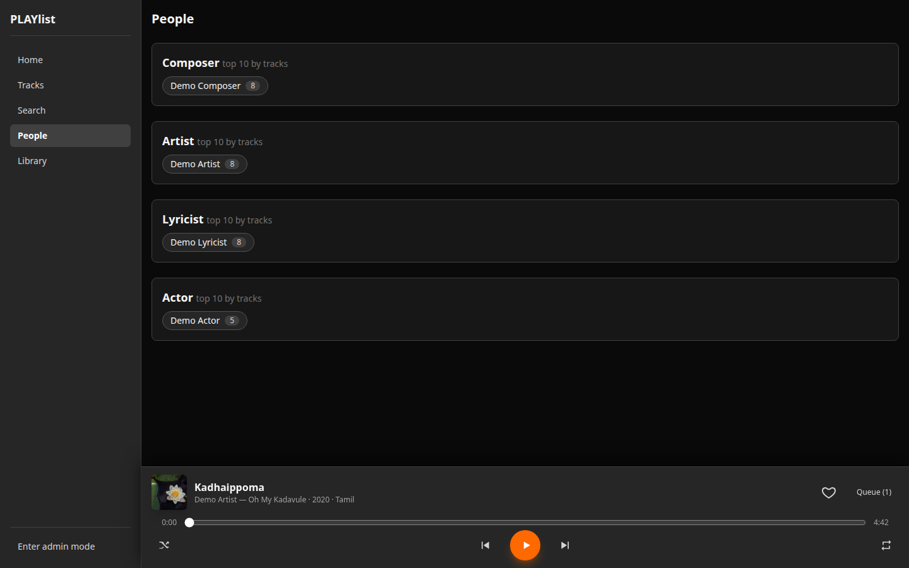
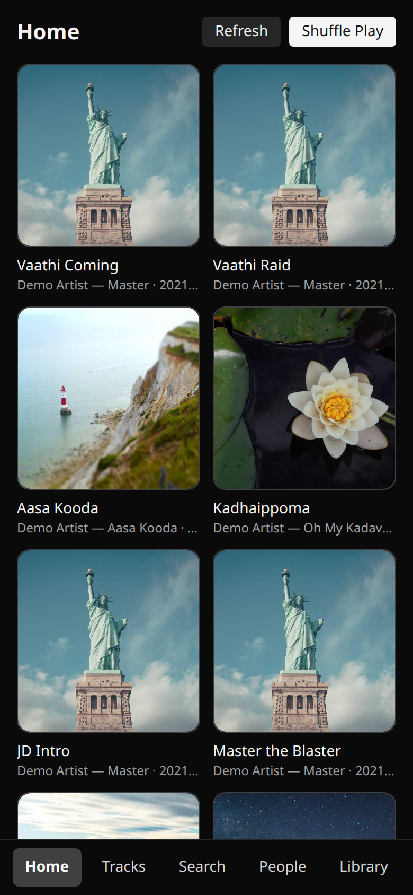
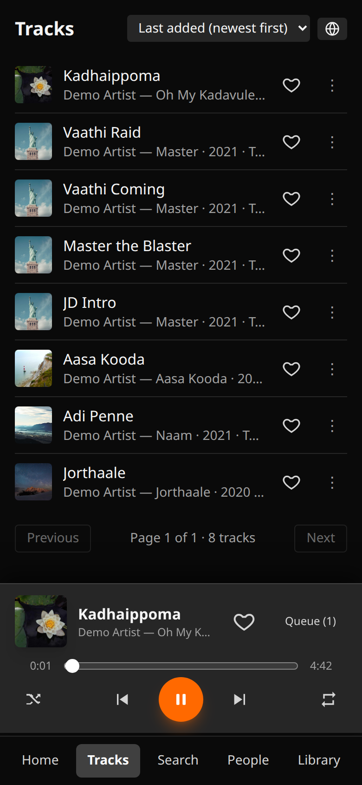
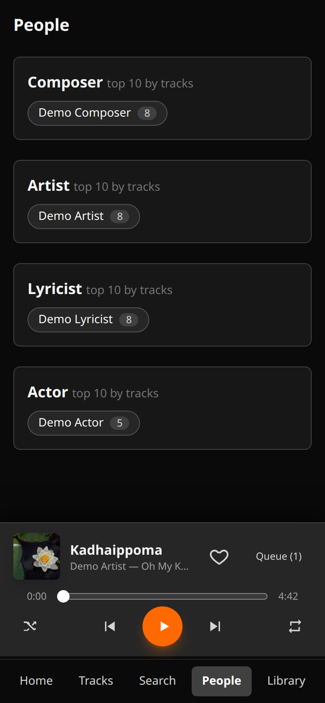

System overview
One Node process serves both the REST API and the built web app. PostgreSQL stores metadata and cover art. Audio files stay on disk.
web/dist and SPA deep links/api/* controllers and services/app/audioComponents
Backend modules are split by domain. Each one has a controller, a service, and a DTO.
Pages
Home, Tracks, Search, People, Person, Manage People, Delete Person, Add Person, Album, Track detail and form, Library, Favorites, Playlist.
Player
Bottom bar with prev, play, next, shuffle (left) and repeat (right). Skips tracks with no audio. Queue state is saved in localStorage.
Data layer
TanStack Query for server data. lib/api.ts wraps fetch under /api.
Tracks
Upload with metadata, edit, delete, favourite, audio streaming, and cover art.
Albums and people
Albums group tracks by name and year. People hold the roles composer, artist, lyricist, and actor.
Playlists and languages
User playlists with ordered tracks, plus a language list for tracks.
Audio and metadata
Reads tags and embedded art from the uploaded file. Accepts mp3, m4a, and opus only.
Prisma
Schema, migrations, and a typed client. Migrations run on container start.
Audio on disk
Files are stored under AUDIO_ROOT. The database stores only the path.
Data model
The core tables and how they relate.
tracks
Name, type (movie or indie), year, language, favourite flag, duration, unique audio path. Belongs to one album and one language.
albums
Name and year, unique together. Cover art is stored once per album and can be replaced from the album page.
people & track_people
People are linked to tracks with a role and a position. A person can hold several roles.
playlists & playlist_tracks
A playlist has ordered tracks. Position is unique within each playlist.
album_artwork
Embedded cover image bytes and MIME type, one row per album. Kept while the album has at least one track, and removed with the album when its last track is deleted.
languages
Unique language names used by tracks.
API endpoints
All routes are prefixed with /api.
Key flows
Uploading a track
- Form sends metadata JSON and the audio file as multipart data.
- Server reads the tags and embedded art with music-metadata.
- Database writes the album, people, track, and art in one transaction.
- Disk keeps the audio file in
AUDIO_ROOT.
Playing a queue
- Action (Play album, People section, Home tile) replaces the queue.
- Player loads the next track with audio from
/api/tracks/:id/audio. - No audio on a track: the player skips to the next one.
- End of queue stops, or restarts when repeat is on.
Deployment
Docker Compose
db runs postgres:17 on 127.0.0.1:5432 with a volume for data. app builds the image, waits for the database, runs prisma migrate deploy, then starts the server on port 3000. The ./audio folder is mounted into the container.
Build
The Dockerfile installs server and web dependencies, runs prisma generate, builds the NestJS server to dist/, and builds the web app to web/dist/. Run ./start.sh --build after code changes.
Screens
Mock data, not a real library.
Desktop (1440 × 900)



Mobile (390 × 844)



Screenshots use a throwaway database with demo song data and placeholder cover images from picsum, not a real library.